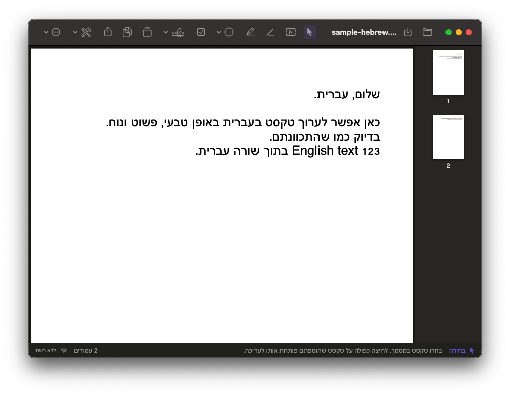
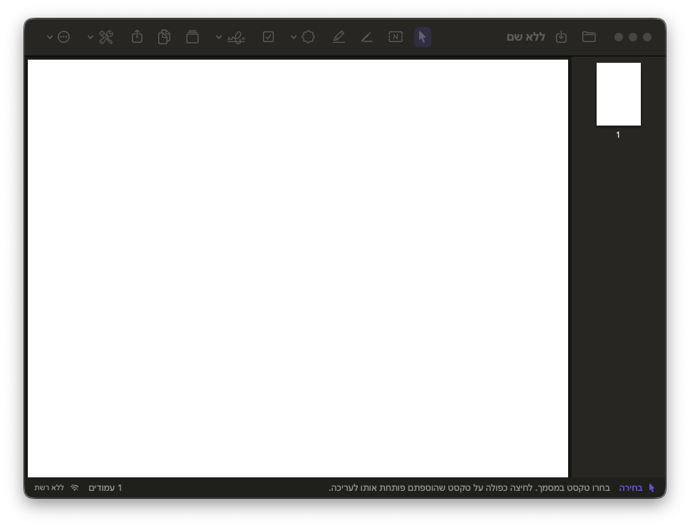
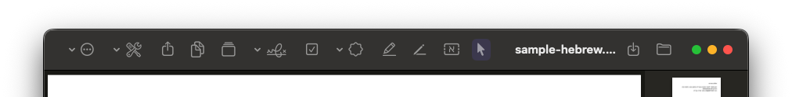

עריכת טקסט קיים
עברית ואנגלית, גם בפסקאות מרובות שורות. המסגרת מתרחבת כשהטקסט ארוך.
קוראים, עורכים ומסמנים בעברית, בדיוק כמו שכותבים.
בלי להקליד הפוך. הכול נשאר במחשב שלכם.
חבילת ההתקנה ל-Mac (DMG) מתפרסמת במאגר ההפצות ב-GitHub.
מעדכון מילה ועד סידור המסמך כולו.
עברית ואנגלית, גם בפסקאות מרובות שורות. המסגרת מתרחבת כשהטקסט ארוך.
מוסיפים טקסט בעברית עם ניקוד, ישירות למסמך.
מסמנים רק את המילים שנבחרו, בדיוק במקום שרוצים.
מאושר, נבדק, העתק נאמן למקור, טיוטה וסודי. וגם חותמות אישיות בכתב יד.
מאחדים קובצי PDF, מסדרים עמודים בגרירה ומוחקים מה שלא צריך.
מוסיפים סימון V לתיבות סימון ולטפסים.
שימוש אוטומטי בפונט המקורי, כשהוא מותקן במחשב.
כל קובץ נפתח בחלון נפרד, למעבר נוח בין מסמכים.
מוצאים ומחליפים מילים בכל המסמך. החיפוש מתעלם מניקוד ומטעמים, כך ש״שָׁלוֹם״ נמצא גם כשמחפשים ״שלום״.
השחרה שמוחקת את הטקסט מהקובץ עצמו, ולא רק מכסה אותו. העמוד המושחר נשמר כתמונה, ואפשר להריץ עליו זיהוי טקסט מחדש.
מנוע Tesseract 5 מובנה בתוכנה עם מודל עברית ואנגלית, בלי אינטרנט ובלי לשלוח קבצים לשום מקום. התוכנה מוסיפה שכבת טקסט שאפשר לחפש בה ולהעתיק ממנה. בבדיקות שלנו על דפים מודפסים וסריקות רגילות הדיוק היה כ־90–97% לפי התווים. בכתב יד, בניקוד ובסריקות באיכות נמוכה הדיוק יורד, והתוכנה מציגה את רמת הביטחון ומזהירה כשהיא נמוכה. אפשר להוסיף שפות נוספות מקובץ, גם בלי אינטרנט.
מחלצים עמודים לקובץ חדש, מפצלים מסמך ומקטינים את נפח ה-PDF.
ממלאים שדות טקסט, תיבות סימון ורשימות בטופסי AcroForm, ומוסיפים שדות חדשים לטופס.
חתימה בתעודה אישית מה-Keychain, מכרטיס חכם או מקובץ .p12, עם תיבת חתימה גלויה שיכולה לכלול גם את החתימה בכתב יד. החתימה עומדת בתקן PAdES B-B. אפשר להוסיף כמה חתימות לאותו מסמך בלי לפגוע בחתימות הקודמות, ואפשר למלא שדה חתימה שכבר קיים בטופס. כל שינוי אחרי החתימה מתגלה. מה עדיין חסר: חותמת זמן מאושרת (TSA) ואימות לטווח ארוך (LTV), כי שתיהן דורשות חיבור לאינטרנט. את תקינות החתימה בודקים ב-Adobe Acrobat Reader, כי Preview של macOS לא מציג אותה.
תאריך עברי, מספר תיק, ״העתק״, ״נתקבל״, ״שולם״ ו״בוטל״, וגם סימן מים לכל העמודים.
שולחים מסמכים בכפתור ״שיתוף״ (AirDrop, Mail ועוד). כדי לצלם או לסרוק מסמך עם Continuity Camera, לוחצים קליק ימני ובוחרים ״ייבוא מ-iPhone״, והתמונה נוספת כעמוד חדש.
בוחרים כמה קובצי PDF ב-Finder, לוחצים קליק ימני ← ״שירותים״ ← ״HebPDF – מיזוג קובצי PDF״. פעולות לאפליקציית Shortcuts ותוסף Quick Look ייעודי יגיעו בקרוב.
מוסיפים, מוחקים ועוברים בין סימניות בעברית. הסימניות נשמרות בקובץ ומופיעות בכל קורא PDF.
מוסיפים פתקים למסמך ומייצאים את כל ההערות (פתקים, מרקר, טקסטים וחותמות) לקובץ Markdown אחד.
התשתית לעדכונים מוכנה, אבל התוכנה לא בודקת עדכונים בעצמה, כי היא לא מתחברת לרשת. בינתיים מעדכנים בהורדת DMG חדש, או דרך MDM בארגונים.
פרופיל הגדרות ל-MDM שנועל הגדרות, וחבילת PKG להתקנה שקטה שמוכנה לחתימה בחשבון Developer ID של הארגון. מצב ״ללא רשת״ נאכף על ידי App Sandbox ונשמר גם אחרי עדכון.
פתיחה, עריכה, הוספת טקסט, מרקר, חותמת ושמירה — עם דוגמאות מהמסך.
פותחים מסמך קיים מהתיקייה, או יוצרים מסמך חדש ריק ומתחילים לכתוב.


בוחרים את כלי החץ (בחירה), מסמנים מילה או משפט במסמך, ועורכים. העריכה נשמרת בתוך העמוד.

טיפ: אחרי בחירת טקסט, אפשר גם להחליף מילים בחיפוש והחלפה מהתפריט.
בוחרים את כלי הטקסט (האות א), לוחצים במקום הרצוי וכותבים. הטקסט נשאר בשורה אחת אלא אם יורדים שורה בעצמכם, ולא דורס טקסט קיים לידו.
כדי לערוך טקסט שהוספתם כהערה: לחיצה כפולה עליו.
מרקר: מסמנים מילים לסימון צהוב מדויק. חותמת: בוחרים חותמת מוכנה (מאושר, נבדק ועוד) או חותמת אישית, ומציבים בעמוד.
שומרים את המסמך מהתפריט או מקיצור המקלדת. השינויים נשארים בקובץ ה־PDF במחשב שלכם.
שלושה צעדים, ואפשר להתחיל לעבוד.
לוחצים על כפתור ההורדה ושומרים את הקובץ.
פותחים את הקובץ וגוררים את HebPDF לתיקיית היישומים (Applications).
מפעילים את HebPDF מתוך Applications ופותחים מסמך.
התקנה והסרה ללא ממשק, מה-Terminal או מסקריפט MDM:
hdiutil attach HebPDF-macOS.dmg -nobrowse -quiet
sudo cp -R "/Volumes/HebPDF/HebPDF.app" /Applications/
hdiutil detach "/Volumes/HebPDF" -quiet
sudo xattr -dr com.apple.quarantine /Applications/HebPDF.appsudo installer -pkg HebPDF.pkg -target /sudo rm -rf /Applications/HebPDF.appאפשר להפיץ דרך Jamf Pro, Microsoft Intune (ל-macOS) או כל MDM המחובר ל-Apple Business Manager.
לא. HebPDF עובדת במחשב בלבד, ללא חיבור לרשת וללא איסוף נתונים.
כן, התוכנה חינמית.
פותחים את תיקיית Applications ב-Finder וגוררים את HebPDF לפח. זהו.
כן. לחיצה ימנית על קובץ PDF ← ״פתיחה באמצעות״ ← HebPDF. כדי שזה יחול על כל קובצי ה-PDF: לחיצה ימנית ← ״קבל מידע״ ← תחת ״פתיחה באמצעות״ בוחרים HebPDF ולוחצים ״שנה הכל...״.
לא. הזיהוי מתבצע במחשב בלבד, בלי חיבור לרשת. לעברית משמש מנוע Tesseract שמובנה בתוכנה, ולשפות אחרות אפשר להשתמש גם ב-Apple Vision. אם חסרה חבילת שפה, התוכנה אומרת זאת ומסבירה איך להוסיף אותה מקובץ.
כיסוי רק מסתיר את הטקסט. מחיקה קבועה מסירה אותו מהקובץ, כך שאי אפשר להעתיק או לשחזר אותו.
כרגע מורידים את קובץ ה-DMG החדש ומחליפים את התוכנה בתיקיית Applications. ההגדרות והחתימה נשמרות. בארגונים מפיצים את ה-PKG החדש דרך MDM. בדיקת עדכונים אוטומטית תגיע בהמשך, ותהיה כבויה כברירת מחדל.
המסמכים שלכם. השפה שלכם. במחשב שלכם.